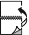

Earth Smart Ayarları
Earth Smart ayarları çevre kirlenmesini azaltırken malzeme ve enerji kullanımınızı da azaltmanızı sağlar. Earth Smart Ayarlarını tüm yazdırma işlerinizde varsayılan olarak seçebilirsiniz. Çevreye Duyarlı Ayarları'na ulaşmak için,  Çevreye Duyarlı Ayarları düğmesini tıklayın.
Çevreye Duyarlı Ayarları düğmesini tıklayın.
Yeşil Çevreye Duyarlı Ayarları düğmesi yazdırma sürücüsünün altındadır. Bu düğmeyi tüm yazdırma işleri için Earth Smart ayarlarını seçmek amacıyla kullanın.
Notlar:
- Listelenen tüm seçenekler tüm yazıcılarda desteklenmez. Bazı seçenekler yalnızca belirli bir yazıcı modeli, yapılandırma, işletim sistemi ya da sürücü türü için geçerlidir.
- Bir yazılım uygulamasından gönderilen bir yazdırma işindeki Earth Smart Ayarlarının değiştirilmesi, yalnızca geçerli işin ayarlarını değiştirir. Earth Smart Ayarlarının yazdırma sürücüsünde değiştirilmesi tüm uygulamalarınızın varsayılan ayarlarını değiştirir.
Çevreye Duyarlı ayarları seçmek için:
- Çevreye Duyarlı Ayarları penceresinde, seçenekleri gerektiği şekilde belirtin.
- Her yazdırma işini kağıdın her iki tarafını da kullanarak yazdırmak için 2 Taraflı Yazdırmayı ayarla'yı seçin.
- 2 Taraflı Yazdırma, işleri kağıdın her iki tarafına, uzun kenardan ciltlenecek şekilde yazdırır. Aşağıdaki çizimde sırasıyla dokümanların dikey ve yatay yönlerle sonuçları gösterilmektedir:

- Daha az kağıt ve toner kullanmak için Örnek Takım'ı seçin.
Örnek Takım iş türü, kalan kopyaları yazdırmadan önce birden çok yazdırma işinin bir kopyasını yazdırır. Örnek takımı inceledikten sonra kalan kopyaları yazdırabilir ya da bunları yazıcı kontrol panelinde silebilirsiniz.
- Çoklu kopya içeren bir yazdırma işinin bir kopyasını yazdırmak ve kalan kopyaları yazıcıda tutmak için, İş Türüm ayarını Çevreye Duyarlı Prova Yazdırma olarak ayarla'yı seçin.
- Her yazdırma işinde başlık sayfalarının yazdırılmasını önlemek için Başlık Sayfası Yok veya Başlık Sayfalarını kapat'ı seçin. Bir seçenek belirleyin:
Bir afiş sayfası, bir yazdırma işi ile yazdırılan ayırıcı bir sayfadır. Bir afiş sayfası işi gönderenin ağ kullanıcı adını ve dokümanın adını içerir. Bir afiş sayfası kullanıldığında sayfa tamamlanan her yazdırma işini çıktı kutusunda ayırır. Bazı yazıcılarda kontrol paneli ayarı, yazdırma sürücüsünde belirlenen afiş sayfası seçeneğini geçersiz kılar.
- İş Kimliğini Yazdırma: Herhangi bir iş kimliği bilgisinin yazdırılmasını önler.
- Kenar Boşluklarına Kimlik Yazdır - Yalnızca İlk Sayfa: İş kimliğini, dokümanın ilk sayfasına sol üst kenar boşluğuna yazdırır.
- Kenar Boşluklarına Kimlik Yazdır - Tüm Sayfalar: İş kimliğini, dokümanın her sayfasına sol üst kenar boşluğuna yazdırır.
- Düşük kalitede görüntüler oluşturarak toner ve mürekkep tasarrufu yapmak için, Taslak Modu'nu veya Taslak Modu öğesini Yazdırma Kalitem olarak ayarla'yı seçin.
- Tamam düğmesini tıklatın.